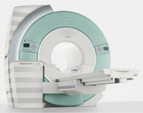

Простота, доступность и безвредность!
Благодаря появлению в центре медицинской диагностики "МАГНИ ТАЙМ" современного мощнейшего аппарата магнитно-резонансного томографа сегодня стало возможным и доступным обследование всей области человеческого организма - диагностика заболеваний внутренних органов, суставов, скелетного строения человека, молочных желез, патологий беременных, плода, сосудов конечностей и внутренних органов и беспрецедентное обзорное сканирование всего тела. Также появилась возможность обследования детей любого возраста. Новейшая технология предлагает решение задач в неврологии, ортопедии, абдоминальной и сердечно-сосудистой диагностики, маммологии, онкологии и педиатрии.
И самое важное, данный метод обследования совершенно безвреден, что и отличает магнитно-резонансную томографию от рентгенологических методов диагностики (рентгена, компьютерной томографии).
Возможность профилактических обследований!
Данные обследования могут проводиться всем желающим без предварительной подготовки. Вы можете провести обследование интересующего Вас органа или всего организма без проведения дополнительных процедур.
Существенным достоинством магнитно-резонансной томографии является то, что данное обследование занимает минимум времени и позволяет избежать изнуряющих посещений медицинских учреждений.
Даже если вас абсолютно не беспокоит ваш организм, вы можете провести обследование в профилактических целях.
Максимальный комфорт для пациента и эргономичность медицинского оборудования!
Новейшая технология устанавливает новые стандарты комфорта пациента при проведении обследования благодаря революционному открытому дизайну магнита с диаметром туннеля 70см и длинной туннеля всего 125 см, возможность обследования пациентов ростом до 2.05 и весом до 200 кг.
Подобный дизайн позволяет проводить большинство видов обследования в положении пациента, при котором его голова находится вне туннеля магнита, что существенно снижает беспокойство пациента и влияние клаустрофобии.
Изображение в развертке - возможность точной диагностики!
Центр медицинской диагностики "Магнитайм" при исследовании методом магнитно-резонансной томографии предоставляет следующие возможности:
- видеть не только острые, но и хронические гематомы любой плотности и размеров
- изучать нейроанатомию в норме и при заболеваниях центральной нервной системы, буквально видеть пути и центры двигательной, чувствительной и иных систем
- уточнять картину и определять субстрат любой жалобы больных: головная боль, головокружение, снижение зрения, глухота, эпилептические припадки, аменорея и т.д.
- обеспечить надежность не только при очаговых поражениях головного мозга (опухоли, особенно небольшие в стволе и глубинных отделах; кисты, абсцессы и др.), но и при пороках развития, дегенеративных и инфекционно-аллергических заболеваниях. Например, при рассеянном склерозе магнитно-резонансная томография четко выделяет даже маленькие очажки демиелинизации
- Проводить исследования сосудов головного мозга (ангиографию) и выявлять сужение сосудов, артерио-венозные мальформации, аневризмы сосудов и другие патологические органические изменения в сосудах
- наряду со стандартным исследованием брюшной полости (печень, селезенка, желчный пузырь, желчевыводящие протоки, поджелудочная железа), проводить магнитно-резонансную холангиографию (желчных путей и желчного пузыря) неинвазивным методом без введения контрастного вещества
- широко использовать новые, уникальные методики МРТ, такие как: МР-урография, позволяющая по-новому взглянуть на проблему диагностики заболеваний верхней трети мочеточников, МР-ангиография, функциональные исследования почек и предстательной железы с возможностью оценки перфузии органов, его функции и лучшей дифференциации нормальных и патологически измененных тканей
- проводить исследование малого таза у женщин, которое обеспечивает выявление патологии матки, яичников и мочевого пузыря с большей эффективностью, чем при исследовании УЗИ
- проводить обследование плода беременных женщин, начиная с 20-ой недели беременности, которая открывает широкие возможности для раннего выявления патологии и выбора правильной медицинской тактики ведения беременности
- Гибкие катушки позволяют обследовать крупные суставы тела, как в статике, так и в динамике, что весьма затруднительно в системах закрытого типа
- При обследовании позвоночника поэтапные катушки обеспечивают целый ряд динамических размеров человеческого тела, позволяющих обследовать пациентов нестандартной комплекции с индивидуальным размером тела, производя оптимизированные результаты обследования области спины и всего опорно двигательного аппарата
- МРТ молочных желез (МР-маммография) позволяет получить четкие изображения молочных желез, которые дают важную информацию для диагностики забаливаний молочных желез. МР-маммография с контрастированием, благодаря высокой разрешающей способности аппарата, использованию тонких срезов и возможности проведения исследования в любой плоскости позволяет не только более точно характеризовать патологическое образование по сравнению с рентгеновской маммографией или УЗИ, деференцировать узловые образования,а также делать вывод о васкуляризация новообразования и прогнозировать его развитие, но и выявить опухолевые образования, не диагностируемые традиционными методами исследования ( рентгеновская маммография, УЗИ)
- Магнитно-резонастный томограф в нашем центре способен провести скрининг всего тела человека за одно исследования. Это позволяет сразу оценить состояние очень многих органов и тканей человеческого тела (начиная от головного мозга и заканчивая органами малого таза). Основные достоинства этого исследования – это безвредность, быстрота (около 30 минут) и большой объем получаемой информации. Скрининг всего тела особенно необходим при поиске метастазов либо первичного злокачественного образования.